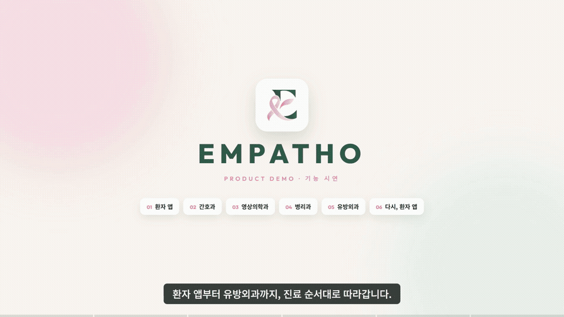
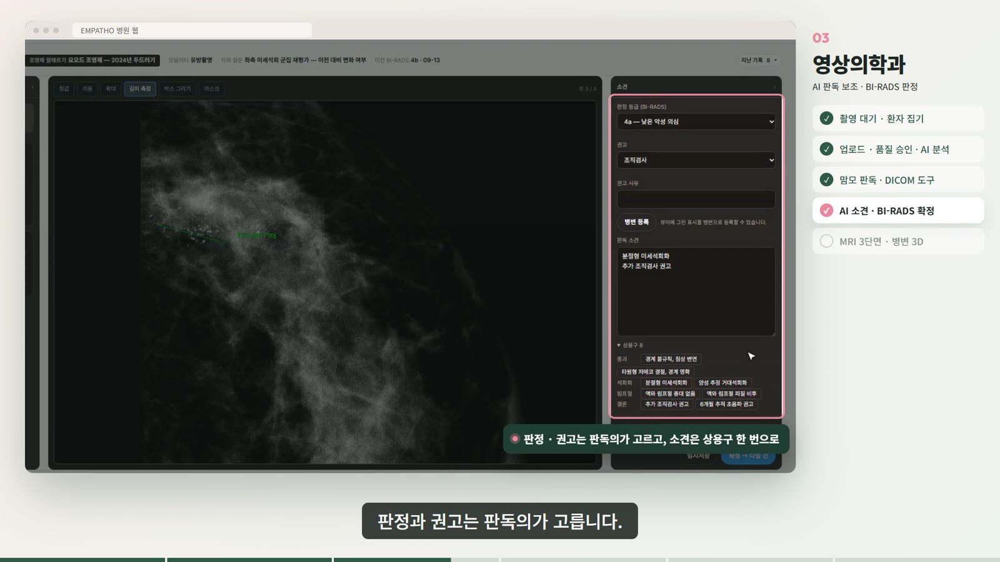
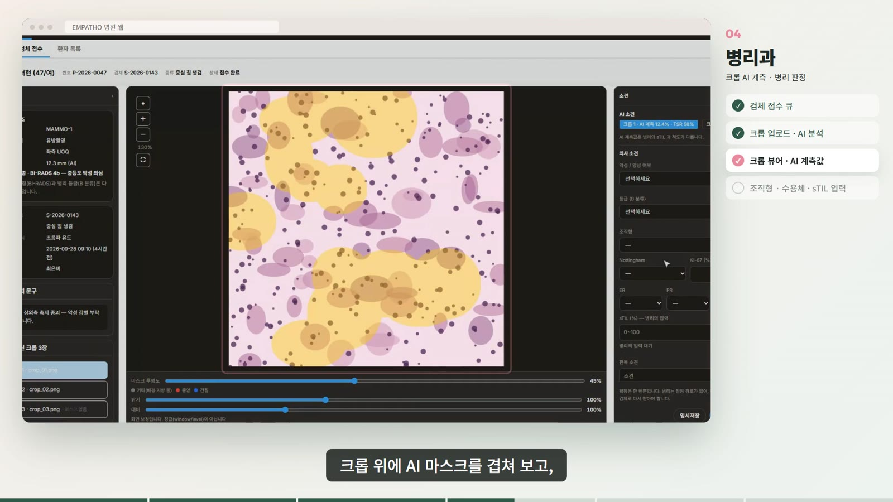
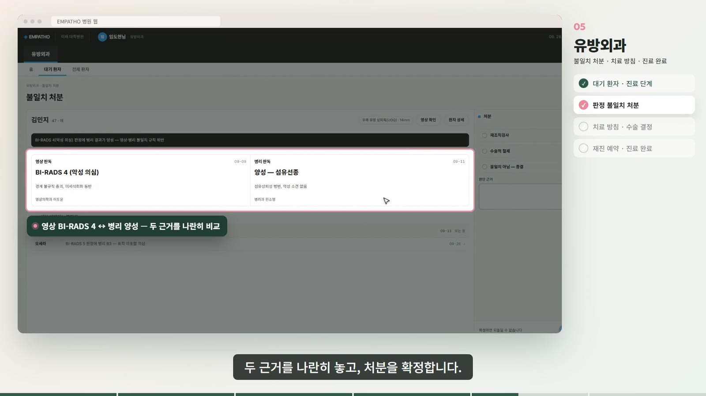

의료 AI · 최종 프로젝트
EMPATHO
AI가 판정을 대신하지 않고, 근거를 보여주고 · 확신이 없으면 멈추고 · 최종 판단은 의료진에게 돌려주는 유방암 검진 서비스

무엇이 끊겨 있었나
유방암 검진은 한 사람의 여정이지만, 기록은 과마다 흩어져 있습니다. 영상의학과가 "의심" 판정을 내리면 조직검사로 넘어가고, 병리 결과가 나오면 유방외과가 치료를 정합니다. 그런데 영상 판정, 병리 결과, 추적관리가 하나의 흐름으로 연결돼 있지 않았습니다.
여기에 AI를 그냥 얹으면 새로운 문제가 생깁니다. 의사가 AI가 보여준 숫자에 끌려가고(앵커링), AI는 틀릴 때도 똑같이 자신 있게 말합니다. 그래서 목표를 "더 정확한 모델"이 아니라 "끊긴 흐름을 잇고, AI를 안전하게 쓰게 하는 서비스"로 잡았습니다.
| 원칙 | 화면에서는 |
|---|---|
| 근거를 보여준다 | 병변 마스크 · 판정 서술어 · 지표 카드 |
| 확신이 없으면 멈춘다 | 등급 대신 「판단 보류」, 사람이 먼저 판정 |
| 병변 하나로 잇는다 | 영상 소견 → 검체 → 병리 결과가 같은 병변 아래 묶임 |
| 설명 후에 공개한다 | 환자 리포트는 대면 설명 뒤에 잠금 해제 |
내가 한 일
기획 — 개인 문제정의서를 쓰고, 팀 합의를 결정 27건 · 보완 8건으로 정리한 결정사항 문서를 만들었습니다. 문서마다 어디를 고쳐야 하는지 색인을 붙이고, 「이번 범위에서 결정하지 않는 것」 목록도 함께 적었습니다. 발표 피드백을 슬라이드별로 취합하고, 25분 발표 대본과 시연 영상을 만들었습니다.
구현 — 화면 저장소에 103개(팀 내 최다), 서버 저장소에 70개의 커밋을 남겼습니다. 간호과 화면 전반과 병리 화면, 로그인·내 정보, 그리고 Go로 만든 서비스 3종(파일 게이트웨이 · LLM 프록시 · 알림)의 초기 구현과 nginx 단일 진입점을 맡았습니다.
기획 결정 기록
① 검체 연결 권한의 빈틈
- 문제
- 팀 합의는 "검체를 병변에 연결하는 권한 = 유방외과 + 간호과"였습니다. 그런데 영상의학과가 직접 시행하는 영상유도 조직검사는 이 규칙에 걸려 병리 접수가 멈춥니다.
- 선택지
- ① 세 부서 모두 허용 ② 시술한 사람 + 간호과
- 결정
- ①. 기존 합의를 가장 적게 바꾸면서 흐름이 끊기지 않는 쪽을 골랐습니다.
- 결과
- 권한표와 에러코드에 반영되고, 발표 자료 수정 근거가 되었습니다.
② "이번에 결정하지 않는 것"을 먼저 적기
- 문제
- 시연용 프로토타입인데 재시도·감사 배치·결제 같은 운영 항목까지 정하려다 일정이 밀리기 시작했습니다.
- 기준
- "이게 없으면 시연 경로가 끊기는가? 발표의 주장이 무너지는가?"
- 결정
- 모델 관리는 설정 파일로, 결제는 버튼까지만 두었습니다. 대신 1차 판정 잠금 · 판단 보류 · 필수 연결처럼 나중에 넣으면 과거 기록을 되살릴 수 없는 것은 반드시 넣었습니다.


③ BI-RADS 0을 "의심"으로 뭉개지 않기
- 발견
- 공개 데이터에서 판정 0의 상당수가 "가려져서 안 보임"이었습니다. 이건 "의심스럽다"가 아니라 "다시 찍자"는 뜻입니다.
- 결정
- 등급에 섞지 않고 「추가 촬영」 칸을 따로 두었습니다.
- 결과
- 추가 촬영으로 끝날 환자가 조직검사 경로로 밀려가지 않습니다.
④ 현장 동선에 맞춘 권한과 화면
- 관찰
- 간호과가 실제로는 원무 접수까지 맡고 있었고, 같은 환자가 같은 날 두 번 예약되거나 노쇼 오더가 쌓이는 일이 생겼습니다.
- 결정
- 간호과에 원무 권한을 통합하고, 중복 예약을 막고, 예약 환자 접수 시 기존 오더를 이어 쓰게 했습니다.

⑤ 발표를 "기능 소개"에서 "고친 문제"로
- 문제
- 35장 중 15장이 화면 넘기기였고, "등급을 숨긴다"는 슬라이드에 등급이 보이는 모순도 있었습니다.
- 결정
- 화면 슬라이드를 9장으로 줄이고, 제목을 기능명 대신 고친 문제로 바꿨습니다. 성능 주장과 설계 주장을 구분하고 「기존 경로가 끊기는 지점」 슬라이드를 새로 넣었습니다.
팀의 결과
| 영역 | 지표 |
|---|---|
| 초음파 | 외부 검증셋 Dice 0.788 · 등급 ±1 이내 0.949 |
| MRI | 종양 Dice 0.717 |
| 인프라 | 영상 모델 3종이 백본 하나를 공유해 GPU 메모리 약 46% 절감 |
| 규모 | 공개 API 약 100개 · 테스트 265개 · 근거 논문 38편 |
모델 학습과 성능 수치는 팀원들의 작업입니다. 같은 환자의 영상·병리 짝 데이터가 공개돼 있지 않아 모달리티마다 다른 코호트를 썼고, 이 한계를 화면과 발표에 먼저 밝혔습니다. 모든 환자 데이터는 합성 데이터입니다.
돌아보며
가장 많이 배운 건 모델이 아니라 합의를 문서로 만드는 일이었습니다. 다섯 명이 각자 옳은 말을 해도, 그걸 한 장에 모아 "무엇을 정했고 무엇을 미뤘는지" 적어 두지 않으면 다음 사람이 이어받을 수 없습니다. 그래서 결정마다 근거와 영향받는 문서를 함께 적었고, 이 기록이 이후 권한표·에러코드·발표 자료를 고칠 때의 기준이 되었습니다.
코드와 전체 README → github.com/spgummo0905-alt/empatho-showcase